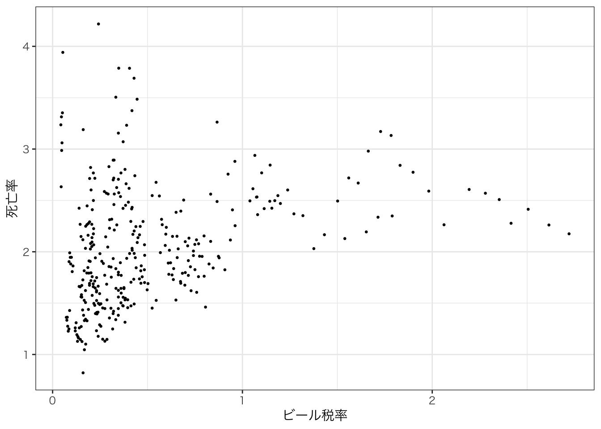
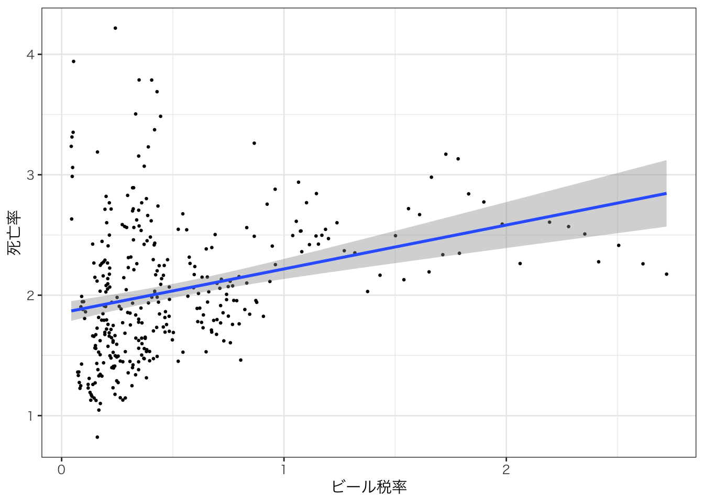
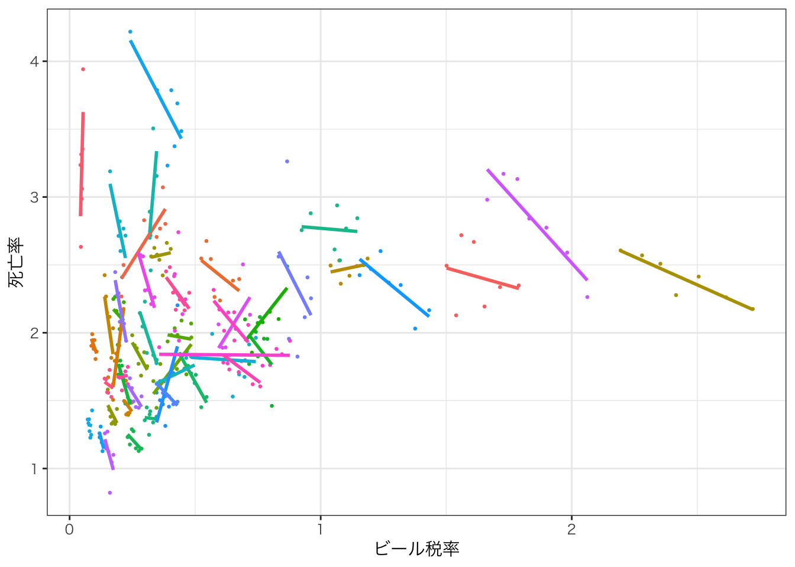

Chapter 14 パネルデータ分析
14.1 パネルデータとは
重回帰分析のセクションで扱ったデータは基本的にはクロスセクションデータであった。 これは、データの変動が人であったり、県であったり、グループであったりするものであり、データでは添字\(i\)で表現していた。
これに加えて、時間の変動藻ある場合には、クロスセクションデータで分析するよりアドバンテージがある。時間変動がある場合にどのような形になるか見てみよう。
14.1.3 データの準備
データを読み込む。データ名が長いので、 data_fに入れ替えよう。
データの中身を見てみる。
まずは、どんなデータなのかhead()で確認する。
## state year spirits unemp income emppop beertax
## 1 al 1982 1.37 14.4 10544.15 50.69204 1.539379
## 2 al 1983 1.36 13.7 10732.80 52.14703 1.788991
## 3 al 1984 1.32 11.1 11108.79 54.16809 1.714286
## 4 al 1985 1.28 8.9 11332.63 55.27114 1.652542
## 5 al 1986 1.23 9.8 11661.51 56.51450 1.609907
## 6 al 1987 1.18 7.8 11944.00 57.50988 1.560000
## baptist mormon drinkage dry youngdrivers
## 1 30.3557 0.32829 19.00 25.0063 0.211572
## 2 30.3336 0.34341 19.00 22.9942 0.210768
## 3 30.3115 0.35924 19.00 24.0426 0.211484
## 4 30.2895 0.37579 19.67 23.6339 0.211140
## 5 30.2674 0.39311 21.00 23.4647 0.213400
## 6 30.2453 0.41123 21.00 23.7924 0.215527
## miles breath jail service fatal nfatal sfatal
## 1 7233.887 no no no 839 146 99
## 2 7836.348 no no no 930 154 98
## 3 8262.990 no no no 932 165 94
## 4 8726.917 no no no 882 146 98
## 5 8952.854 no no no 1081 172 119
## 6 9166.302 no no no 1110 181 114
## fatal1517 nfatal1517 fatal1820 nfatal1820 fatal2124
## 1 53 9 99 34 120
## 2 71 8 108 26 124
## 3 49 7 103 25 118
## 4 66 9 100 23 114
## 5 82 10 120 23 119
## 6 94 11 127 31 138
## nfatal2124 afatal pop pop1517 pop1820
## 1 32 309.438 3942002 208999.6 221553.4
## 2 35 341.834 3960008 202000.1 219125.5
## 3 34 304.872 3988992 197000.0 216724.1
## 4 45 276.742 4021008 194999.7 214349.0
## 5 29 360.716 4049994 203999.9 212000.0
## 6 30 368.421 4082999 204999.8 208998.5
## pop2124 milestot unempus emppopus gsp
## 1 290000.1 28516 9.7 57.8 -0.02212476
## 2 290000.2 31032 9.6 57.9 0.04655825
## 3 288000.2 32961 7.5 59.5 0.06279784
## 4 284000.3 35091 7.2 60.1 0.02748997
## 5 263000.3 36259 7.0 60.7 0.03214295
## 6 258999.8 37426 6.2 61.5 0.04897637このデータはアメリカの州×年ごとに、様々な変数が記録されているデータである。 どんな変数が記録されているかは、helpファイルを見るとわかる。
14.1.4 データの記述統計
データの記述統計を確認しよう。一番基本的なものはsummary()関数を使う方法である。
## state year spirits
## al : 7 1982:48 Min. :0.790
## az : 7 1983:48 1st Qu.:1.300
## ar : 7 1984:48 Median :1.670
## ca : 7 1985:48 Mean :1.754
## co : 7 1986:48 3rd Qu.:2.013
## ct : 7 1987:48 Max. :4.900
## (Other):294 1988:48
## unemp income emppop
## Min. : 2.400 Min. : 9514 Min. :42.99
## 1st Qu.: 5.475 1st Qu.:12086 1st Qu.:57.69
## Median : 7.000 Median :13763 Median :61.36
## Mean : 7.347 Mean :13880 Mean :60.81
## 3rd Qu.: 8.900 3rd Qu.:15175 3rd Qu.:64.41
## Max. :18.000 Max. :22193 Max. :71.27
##
## beertax baptist mormon
## Min. :0.04331 Min. : 0.0000 Min. : 0.1000
## 1st Qu.:0.20885 1st Qu.: 0.6268 1st Qu.: 0.2722
## Median :0.35259 Median : 1.7492 Median : 0.3931
## Mean :0.51326 Mean : 7.1569 Mean : 2.8019
## 3rd Qu.:0.65157 3rd Qu.:13.1271 3rd Qu.: 0.6293
## Max. :2.72076 Max. :30.3557 Max. :65.9165
##
## drinkage dry youngdrivers
## Min. :18.00 Min. : 0.00000 Min. :0.07314
## 1st Qu.:20.00 1st Qu.: 0.00000 1st Qu.:0.17037
## Median :21.00 Median : 0.08681 Median :0.18539
## Mean :20.46 Mean : 4.26707 Mean :0.18593
## 3rd Qu.:21.00 3rd Qu.: 2.42481 3rd Qu.:0.20219
## Max. :21.00 Max. :45.79210 Max. :0.28163
##
## miles breath jail service
## Min. : 4576 no :181 no :241 no :273
## 1st Qu.: 7183 yes:155 yes : 94 yes : 62
## Median : 7796 NA's: 1 NA's: 1
## Mean : 7891
## 3rd Qu.: 8504
## Max. :26148
##
## fatal nfatal sfatal
## Min. : 79.0 Min. : 13.00 Min. : 8.0
## 1st Qu.: 293.8 1st Qu.: 53.75 1st Qu.: 35.0
## Median : 701.0 Median : 135.00 Median : 81.0
## Mean : 928.7 Mean : 182.58 Mean :109.9
## 3rd Qu.:1063.5 3rd Qu.: 212.00 3rd Qu.:131.0
## Max. :5504.0 Max. :1049.00 Max. :603.0
##
## fatal1517 nfatal1517 fatal1820
## Min. : 3.00 Min. : 0.00 Min. : 7.0
## 1st Qu.: 25.75 1st Qu.: 4.00 1st Qu.: 38.0
## Median : 49.00 Median :10.00 Median : 82.0
## Mean : 62.61 Mean :12.26 Mean :106.7
## 3rd Qu.: 77.00 3rd Qu.:15.25 3rd Qu.:130.2
## Max. :318.00 Max. :76.00 Max. :601.0
##
## nfatal1820 fatal2124 nfatal2124
## Min. : 0.00 Min. : 12.0 Min. : 1.00
## 1st Qu.: 11.00 1st Qu.: 42.0 1st Qu.: 13.00
## Median : 24.00 Median : 97.5 Median : 30.00
## Mean : 33.53 Mean :126.9 Mean : 41.38
## 3rd Qu.: 44.00 3rd Qu.:150.5 3rd Qu.: 49.00
## Max. :196.00 Max. :770.0 Max. :249.00
##
## afatal pop pop1517
## Min. : 24.6 Min. : 479000 Min. : 21000
## 1st Qu.: 90.5 1st Qu.: 1545251 1st Qu.: 71750
## Median : 211.6 Median : 3310503 Median : 163000
## Mean : 293.3 Mean : 4930272 Mean : 230816
## 3rd Qu.: 364.0 3rd Qu.: 5751735 3rd Qu.: 270500
## Max. :2094.9 Max. :28314028 Max. :1172000
##
## pop1820 pop2124 milestot
## Min. : 21000 Min. : 30000 Min. : 3993
## 1st Qu.: 76962 1st Qu.: 103500 1st Qu.: 11692
## Median : 170982 Median : 241000 Median : 28484
## Mean : 249090 Mean : 336390 Mean : 37101
## 3rd Qu.: 308311 3rd Qu.: 413000 3rd Qu.: 44140
## Max. :1321004 Max. :1892998 Max. :241575
##
## unempus emppopus gsp
## Min. :5.500 Min. :57.80 Min. :-0.123641
## 1st Qu.:6.200 1st Qu.:57.90 1st Qu.: 0.001182
## Median :7.200 Median :60.10 Median : 0.032413
## Mean :7.529 Mean :59.97 Mean : 0.025313
## 3rd Qu.:9.600 3rd Qu.:61.50 3rd Qu.: 0.056501
## Max. :9.700 Max. :62.30 Max. : 0.142361
## Chapter @ref(#rstats) で説明したように、他のパッケージを使う方法もある。
## vars n mean sd median
## state* 1 336 24.50 13.87 24.50
## year* 2 336 4.00 2.00 4.00
## spirits 3 336 1.75 0.68 1.67
## unemp 4 336 7.35 2.53 7.00
## income 5 336 13880.18 2253.05 13763.13
## emppop 6 336 60.81 4.72 61.36
## beertax 7 336 0.51 0.48 0.35
## baptist 8 336 7.16 9.76 1.75
## mormon 9 336 2.80 9.67 0.39
## drinkage 10 336 20.46 0.90 21.00
## dry 11 336 4.27 9.50 0.09
## youngdrivers 12 336 0.19 0.02 0.19
## miles 13 336 7890.75 1475.66 7796.22
## breath* 14 336 1.46 0.50 1.00
## jail* 15 335 1.28 0.45 1.00
## service* 16 335 1.19 0.39 1.00
## fatal 17 336 928.66 934.05 701.00
## nfatal 18 336 182.58 188.43 135.00
## sfatal 19 336 109.95 108.54 81.00
## fatal1517 20 336 62.61 55.73 49.00
## nfatal1517 21 336 12.26 12.25 10.00
## fatal1820 22 336 106.66 104.22 82.00
## nfatal1820 23 336 33.53 33.24 24.00
## fatal2124 24 336 126.87 131.79 97.50
## nfatal2124 25 336 41.38 42.93 30.00
## afatal 26 336 293.33 303.58 211.59
## pop 27 336 4930271.50 5073703.89 3310503.25
## pop1517 28 336 230815.48 229896.27 163000.17
## pop1820 29 336 249090.42 249345.64 170982.34
## pop2124 30 336 336389.89 345304.37 240999.90
## milestot 31 336 37101.49 37454.37 28483.50
## unempus 32 336 7.53 1.48 7.20
## emppopus 33 336 59.97 1.59 60.10
## gsp 34 336 0.03 0.04 0.03
## min max range
## state* 1.00 48.00 47.00
## year* 1.00 7.00 6.00
## spirits 0.79 4.90 4.11
## unemp 2.40 18.00 15.60
## income 9513.76 22193.46 12679.69
## emppop 42.99 71.27 28.28
## beertax 0.04 2.72 2.68
## baptist 0.00 30.36 30.36
## mormon 0.10 65.92 65.82
## drinkage 18.00 21.00 3.00
## dry 0.00 45.79 45.79
## youngdrivers 0.07 0.28 0.21
## miles 4576.35 26148.27 21571.93
## breath* 1.00 2.00 1.00
## jail* 1.00 2.00 1.00
## service* 1.00 2.00 1.00
## fatal 79.00 5504.00 5425.00
## nfatal 13.00 1049.00 1036.00
## sfatal 8.00 603.00 595.00
## fatal1517 3.00 318.00 315.00
## nfatal1517 0.00 76.00 76.00
## fatal1820 7.00 601.00 594.00
## nfatal1820 0.00 196.00 196.00
## fatal2124 12.00 770.00 758.00
## nfatal2124 1.00 249.00 248.00
## afatal 24.60 2094.90 2070.30
## pop 478999.72 28314028.00 27835028.28
## pop1517 21000.02 1172000.25 1151000.23
## pop1820 20999.96 1321004.38 1300004.41
## pop2124 30000.16 1892998.12 1862997.97
## milestot 3993.00 241575.02 237582.02
## unempus 5.50 9.70 4.20
## emppopus 57.80 62.30 4.50
## gsp -0.12 0.14 0.27
## se
## state* 0.76
## year* 0.11
## spirits 0.04
## unemp 0.14
## income 122.91
## emppop 0.26
## beertax 0.03
## baptist 0.53
## mormon 0.53
## drinkage 0.05
## dry 0.52
## youngdrivers 0.00
## miles 80.50
## breath* 0.03
## jail* 0.02
## service* 0.02
## fatal 50.96
## nfatal 10.28
## sfatal 5.92
## fatal1517 3.04
## nfatal1517 0.67
## fatal1820 5.69
## nfatal1820 1.81
## fatal2124 7.19
## nfatal2124 2.34
## afatal 16.56
## pop 276793.24
## pop1517 12541.87
## pop1820 13602.92
## pop2124 18837.90
## milestot 2043.30
## unempus 0.08
## emppopus 0.09
## gsp 0.00psychパッケージのdescribe()では、カテゴリー変数も無理やり数値化して計算するのでおかしなことになっているものがあることである。例えば、stateは州なので、平均や標準偏差が計算されているのはおかしい。
しかし、数値の変数を見るときには有用である。
skimrパッケージのskim()関数は、カテゴリ変数と連続変数を区別して記述統計を示してくれる。
| Name | data_f |
| Number of rows | 336 |
| Number of columns | 34 |
| _______________________ | |
| Column type frequency: | |
| factor | 5 |
| numeric | 29 |
| ________________________ | |
| Group variables | None |
Variable type: factor
| skim_variable | n_missing | complete_rate | ordered | n_unique | top_counts |
|---|---|---|---|---|---|
| state | 0 | 1 | FALSE | 48 | al: 7, az: 7, ar: 7, ca: 7 |
| year | 0 | 1 | FALSE | 7 | 198: 48, 198: 48, 198: 48, 198: 48 |
| breath | 0 | 1 | FALSE | 2 | no: 181, yes: 155 |
| jail | 1 | 1 | FALSE | 2 | no: 241, yes: 94 |
| service | 1 | 1 | FALSE | 2 | no: 273, yes: 62 |
Variable type: numeric
| skim_variable | n_missing | complete_rate | mean | sd | p0 | p25 | p50 | p75 | p100 | hist |
|---|---|---|---|---|---|---|---|---|---|---|
| spirits | 0 | 1 | 1.75 | 0.68 | 0.79 | 1.30 | 1.67 | 2.01 | 4.90 | ▇▇▁▁▁ |
| unemp | 0 | 1 | 7.35 | 2.53 | 2.40 | 5.48 | 7.00 | 8.90 | 18.00 | ▅▇▃▁▁ |
| income | 0 | 1 | 13880.18 | 2253.05 | 9513.76 | 12085.85 | 13763.13 | 15175.12 | 22193.46 | ▅▇▅▂▁ |
| emppop | 0 | 1 | 60.81 | 4.72 | 42.99 | 57.69 | 61.36 | 64.41 | 71.27 | ▁▁▆▇▂ |
| beertax | 0 | 1 | 0.51 | 0.48 | 0.04 | 0.21 | 0.35 | 0.65 | 2.72 | ▇▂▁▁▁ |
| baptist | 0 | 1 | 7.16 | 9.76 | 0.00 | 0.63 | 1.75 | 13.13 | 30.36 | ▇▁▁▁▁ |
| mormon | 0 | 1 | 2.80 | 9.67 | 0.10 | 0.27 | 0.39 | 0.63 | 65.92 | ▇▁▁▁▁ |
| drinkage | 0 | 1 | 20.46 | 0.90 | 18.00 | 20.00 | 21.00 | 21.00 | 21.00 | ▁▂▁▁▇ |
| dry | 0 | 1 | 4.27 | 9.50 | 0.00 | 0.00 | 0.09 | 2.42 | 45.79 | ▇▁▁▁▁ |
| youngdrivers | 0 | 1 | 0.19 | 0.02 | 0.07 | 0.17 | 0.19 | 0.20 | 0.28 | ▁▁▇▃▁ |
| miles | 0 | 1 | 7890.75 | 1475.66 | 4576.35 | 7182.54 | 7796.22 | 8504.02 | 26148.27 | ▇▂▁▁▁ |
| fatal | 0 | 1 | 928.66 | 934.05 | 79.00 | 293.75 | 701.00 | 1063.50 | 5504.00 | ▇▂▁▁▁ |
| nfatal | 0 | 1 | 182.58 | 188.43 | 13.00 | 53.75 | 135.00 | 212.00 | 1049.00 | ▇▂▁▁▁ |
| sfatal | 0 | 1 | 109.95 | 108.54 | 8.00 | 35.00 | 81.00 | 131.00 | 603.00 | ▇▂▁▁▁ |
| fatal1517 | 0 | 1 | 62.61 | 55.73 | 3.00 | 25.75 | 49.00 | 77.00 | 318.00 | ▇▃▁▁▁ |
| nfatal1517 | 0 | 1 | 12.26 | 12.25 | 0.00 | 4.00 | 10.00 | 15.25 | 76.00 | ▇▂▁▁▁ |
| fatal1820 | 0 | 1 | 106.66 | 104.22 | 7.00 | 38.00 | 82.00 | 130.25 | 601.00 | ▇▂▁▁▁ |
| nfatal1820 | 0 | 1 | 33.53 | 33.24 | 0.00 | 11.00 | 24.00 | 44.00 | 196.00 | ▇▂▁▁▁ |
| fatal2124 | 0 | 1 | 126.87 | 131.79 | 12.00 | 42.00 | 97.50 | 150.50 | 770.00 | ▇▂▁▁▁ |
| nfatal2124 | 0 | 1 | 41.38 | 42.93 | 1.00 | 13.00 | 30.00 | 49.00 | 249.00 | ▇▂▁▁▁ |
| afatal | 0 | 1 | 293.33 | 303.58 | 24.60 | 90.50 | 211.59 | 363.96 | 2094.90 | ▇▁▁▁▁ |
| pop | 0 | 1 | 4930271.50 | 5073703.89 | 478999.72 | 1545251.47 | 3310503.25 | 5751734.88 | 28314028.00 | ▇▁▁▁▁ |
| pop1517 | 0 | 1 | 230815.48 | 229896.27 | 21000.02 | 71749.93 | 163000.17 | 270500.16 | 1172000.25 | ▇▂▁▁▁ |
| pop1820 | 0 | 1 | 249090.42 | 249345.64 | 20999.96 | 76962.12 | 170982.34 | 308311.35 | 1321004.38 | ▇▂▁▁▁ |
| pop2124 | 0 | 1 | 336389.89 | 345304.37 | 30000.16 | 103500.04 | 240999.90 | 413000.12 | 1892998.12 | ▇▂▁▁▁ |
| milestot | 0 | 1 | 37101.49 | 37454.37 | 3993.00 | 11691.50 | 28483.50 | 44139.75 | 241575.02 | ▇▂▁▁▁ |
| unempus | 0 | 1 | 7.53 | 1.48 | 5.50 | 6.20 | 7.20 | 9.60 | 9.70 | ▇▃▇▁▇ |
| emppopus | 0 | 1 | 59.97 | 1.59 | 57.80 | 57.90 | 60.10 | 61.50 | 62.30 | ▇▃▃▃▇ |
| gsp | 0 | 1 | 0.03 | 0.04 | -0.12 | 0.00 | 0.03 | 0.06 | 0.14 | ▁▂▆▇▁ |
14.2 パネルデータ分析
14.2.1 事例：交通事故死亡率とアルコール税の関係
ここでは、アメリカの州（アラスカとハワイを除いた48州）の1982~1988年のデータを用いて、各州のアルコール税の税率と、交通事故死亡率の関係を分析する。
ここで、日本とは異なる背景知識だが、アメリカは連邦制の国であり、州によって様々な法律が異なる。例えば消費税のない州もあれば、その税率が州で違ったりもする。この場合はアルコール、特にビールにかかる税率が州で異なる点に着目して、税率の違いが酒酔い運転などによっても引き起こされる交通事故死亡率に影響するかどうかを分析する。
州\(i\)の交通事故死亡率を\(y_{i}\)とし、ビール税率を\(x_{i}\)とすると、以下の単回帰式によって、影響が推定できそうだ。
\[ y_{i} = \alpha + \beta x_{i} +\varepsilon_{i} \]
ビール税率を上げると交通事故死亡率が下がる、という仮説を検証したい場合、\(\beta\)が負（マイナス）であると期待するだろう。
まず、この単回帰式を推定するために、クロス・セクションのデータで推定を行ってみよう。 データのうち、1982年と1988年をそれぞれ抽出してみよう。
# クロスセクションデータの作成
data_f2_1982 <- data_f2 |>
filter(year == 1982)
data_f2_1988 <- data_f2 |>
filter(year == 1988)このデータを用いて単位回帰分析を行う。
# 回帰分析
# lm()の代わりに feols()を使う
# 1982年のデータ
reg1_1982 <- feols(fatal_rate ~ beertax, data=data_f2_1982)
# 1988年のデータ
reg1_1988 <- feols(fatal_rate ~ beertax, data=data_f2_1988)結果を表示する。
## reg1_1982 reg1_1988
## Dependent Var.: fatal_rate fatal_rate
##
## Constant 2.010*** (0.1391) 1.859*** (0.1060)
## beertax 0.1485 (0.1884) 0.4388* (0.1645)
## _______________ _________________ _________________
## S.E. type IID IID
## Observations 48 48
## R2 0.01332 0.13400
## Adj. R2 -0.00813 0.11518
## ---
## Signif. codes: 0 '***' 0.001 '**' 0.01 '*' 0.05 '.' 0.1 ' ' 1この結果によれば、1982年ではビール税率が1%上がると、交通事故死亡率が0.1485上昇し、1988年では0.4388上昇する。 このデータは州ごとのクロスセクションデータなので、もう少し正確に解釈すると、ビール税が1%高い州では交通事故死亡率が高い、ということになる。
この結果をグラフでも見てみよう。縦軸を死亡率、横軸をビール税として散布図を描く。ここでは1988年のデータを見てみよう。
ggplot(data=data_f2_1988, aes(x=beertax, y=fatal_rate)) +
geom_point() +
geom_smooth(method="lm", se=FALSE)+
labs(x="ビール税率", y="交通事故死亡率(10000人当たり）") +
theme_gray(base_family = "HiraKakuPro-W3") #<- このレイヤーはWindowsならいらない
むしろ税率と交通事故死亡率には正の関係がある。
このアプローチには問題がないだろうか？なぜなら、クロスセクションデータでは州ごとの違いを見ているので、ビール税が高い州では交通事故死亡率が高いという結果であるが、交通事故死亡率が高い州ではビール税を上げているので高いという可能性もある。州による特性もある。
では時間的な変動を含めたデータでは、どうなるだろうか？
州\(i\)の年\(t\)における交通事故死亡率を\(y_{it}\)とし、ビール税率を\(x_{it}\)とすると、以下の単回帰式によって、影響が推定できそうだ。上の式と違うのは添字に\(t\)が加わり、時間の変動も加味したデータを使っていることだ。
\[ y_{it} = \alpha + \beta x_{it} +\varepsilon_{it} \]
# 回帰分析
# lm()の代わりに feols()を使う
# 1982-1988年のデータ
reg1_panel <- feols(fatal_rate ~ beertax, data=data_f2)結果を表示する。
## reg1_panel
## Dependent Var.: fatal_rate
##
## Constant 1.853*** (0.0436)
## beertax 0.3646*** (0.0622)
## _______________ __________________
## S.E. type IID
## Observations 336
## R2 0.09336
## Adj. R2 0.09065
## ---
## Signif. codes: 0 '***' 0.001 '**' 0.01 '*' 0.05 '.' 0.1 ' ' 1結果は、\(\beta\)に当たるパラメータの推定値が0.3646となり、やはり正の符号となっている。 時間変動を加えても結果は変わっていない、ということはやはりビール税を上げると交通事故死亡率が増えるのだろうか？
14.3 固定効果モデル
ここで、重要なのはデータを変えただけでは本質的な問題である「州の特性によって、死亡率が高い州ほどビール税が高い（上げている）」可能性の影響を推定値から排除できていないことである。
この\(x_{it}\)には、州によってはビール税が（年にかかわらず）高い、という特性も入ってしまっており、そのデータが推定値に影響している。ならば、その影響を分けて推定することはできないか。これが固定効果モデルのアイデアである。
固定効果とは、データとしては直接観察されないが時間的に変化しない主体独特の効果である。この場合は時間的に変化しない州独特の効果と言える。ではデータとしては直接観察されないのに、どうやって回帰式に含めるのか？これは、州ごとのダミー変数を作成するという発想で解決する。
固定効果モデルを式として書くと以下のように書くことができる。
\[ y_{it} = \gamma_{i} + \beta x_{it} + \varepsilon_{it} \]
切片\(\alpha\)の代わりに、添え字\(i\)を持つパラメータ\(\gamma\)が含まれている。これは州ごとに切片が異なる回帰式とも解釈することができる。ここで、州ごとの(交通事故死亡率の)特性の違いが捕捉されるため、ビール税率の係数の推定値はその州ごとの特性を除いた推定値となる。しかし、データではないパラメータに\(i\)がついているのはなぜか？
これは実質的には以下のような式を推定しているのと同じである。
\[ y_{it} = \beta x_{it} + \gamma_{AL} D_{AL} + \gamma_{AZ} D_{AZ} + \gamma_{AR} D_{AR} + \cdots + \gamma_{WY} D_{WY} + + \varepsilon_{it} \]
もしデータ\(i\)がアラバマ州ならば\(D_{AL}\)は1になり、それ以外は0になるので、\(\gamma_{AL}\)が式に残る。もし\(i\)がアリゾナ州ならば\(D_{AZ}\)は1になり、それ以外は0になる。という形で、\(\gamma_{AL}\), \(\gamma_{AZ}\) … \(\gamma_{WY}\)のワイオミング州までを推定するのである。
実際には、これをfeolsでは簡単に推定できる。
# |のあとに固定効果として推定したいカテゴリ（今回は州なのでstate)を入れる
reg1_panel_fe = feols(fatal_rate ~ beertax | state, data = data_f2)
etable(reg1_panel, reg1_panel_fe, se = "IID")## reg1_panel reg1_panel_fe
## Dependent Var.: fatal_rate fatal_rate
##
## Constant 1.853*** (0.0436)
## beertax 0.3646*** (0.0622) -0.6559*** (0.1878)
## Fixed-Effects: ------------------ -------------------
## state No Yes
## _______________ __________________ ___________________
## S.E. type IID IID
## Observations 336 336
## R2 0.09336 0.90501
## Within R2 -- 0.04075
## ---
## Signif. codes: 0 '***' 0.001 '**' 0.01 '*' 0.05 '.' 0.1 ' ' 1結果は、固定効果モデル（右）では単位回帰モデル（左）では正だった係数が負になっている。 この結果を解釈すると、「ビール税率が上がると、交通事故死亡率が下がる」という解釈となる。
このように、本当に推定したい効果が、データの特徴によって推定できない場合、それが主体独特の効果である場合は、固定効果モデルを用いることで分別して推定することができる。
しかし、固定効果モデルはパネルデータではないと使うことができない。 たとえば、上で作成したクロスセクションデータで固定効果モデルを推定してみよう。
## Error: in feols(fatal_rate ~ beertax | state, data = data_f...:
## The only variable, 'beertax', is collinear with the
## fixed effects. Without doubt, your model is
## misspecified.エラーが出る。これは、クロスセクションデータでは州ごとの変動しかないため、ダミー変数による固定効果の変動（州によって1か0か）と州ごとのビール税の変動のどちらが交通事故死亡率の変動を説明しているか識別ができないためである。
14.3.1 固定効果モデルのビジュアルイメージ
固定効果モデルをビジュアルイメージで理解してみよう。
まず、パネルデータを使って散布図を書いてみよう。
ggplot(data=data_f2, aes(x=beertax,y=fatal_rate)) +
geom_point(size=0.5) +
labs(x = "ビール税率", y="死亡率") +
theme_bw(base_family = "HirakakuPro-W3")
これだけを見ると、やはり右肩上がりの傾向があるように見える。
geom_smooth(method="lm")というレイヤーを加えて、回帰線を描いてみよう。
ggplot(data=data_f2, aes(x=beertax,y=fatal_rate)) +
geom_point(size=0.5) +
labs(x = "ビール税率", y="死亡率") +
geom_smooth(method="lm") +
theme_bw(base_family = "HirakakuPro-W3")
やはり右肩あがりになっている。
では、今度は州ごとに色分けしてみよう。aes()の中で色カテゴリに州を指定するcol=state。
ggplot(data=data_f2, aes(x=beertax,y=fatal_rate,col=state)) +
geom_point(size=0.5) +
labs(x = "ビール税率", y="死亡率") +
geom_smooth(method="lm", se=FALSE) +
theme_bw(base_family = "HirakakuPro-W3") +
theme(legend.position = "none") # <- もし凡例が大きすぎて図が見えない場合はこのレイヤーを追加して凡例を消す すると、州ごと分けた点と線が描かれる。州ごとに見ると、州の中での時間的な変動ではビール税率が高いときに死亡率が下がっている傾向が見られるだろう。このように、州間の違いと州内の違いを分けて推定できるのが固定効果モデルである。